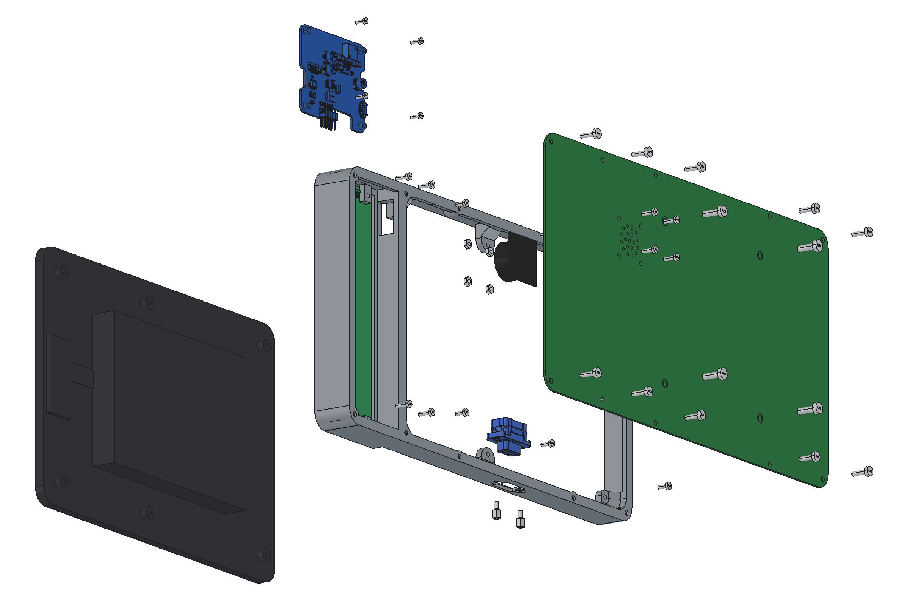

JC8012P4A1C Enclosure & CAN Addon
Enclosure, mounting and CAN/power addon board for the Guition JC8012P4A1C (ESP32-P4, 10.1") display, used by espVT. Interactive BOMs, schematics and drawings open directly in the browser. Source: GitHub repository.

PCBs
CAN & power board
CAN transceiver TLE9250VSJ, 12 V input, 5 V buck. Both variants.
Keypad
12 keys F1–F12 in a 3 × 4 matrix with diodes. Variant 2.
Back plate
FR4 back plate with VESA 100 mount and speaker. Variant 1.
Back plate with keypad
Wide FR4 back plate (296.9 mm). Variant 2.
Assembly & mechanics
Assembly drawings (A3)
Exploded view, parts list, order of assembly.